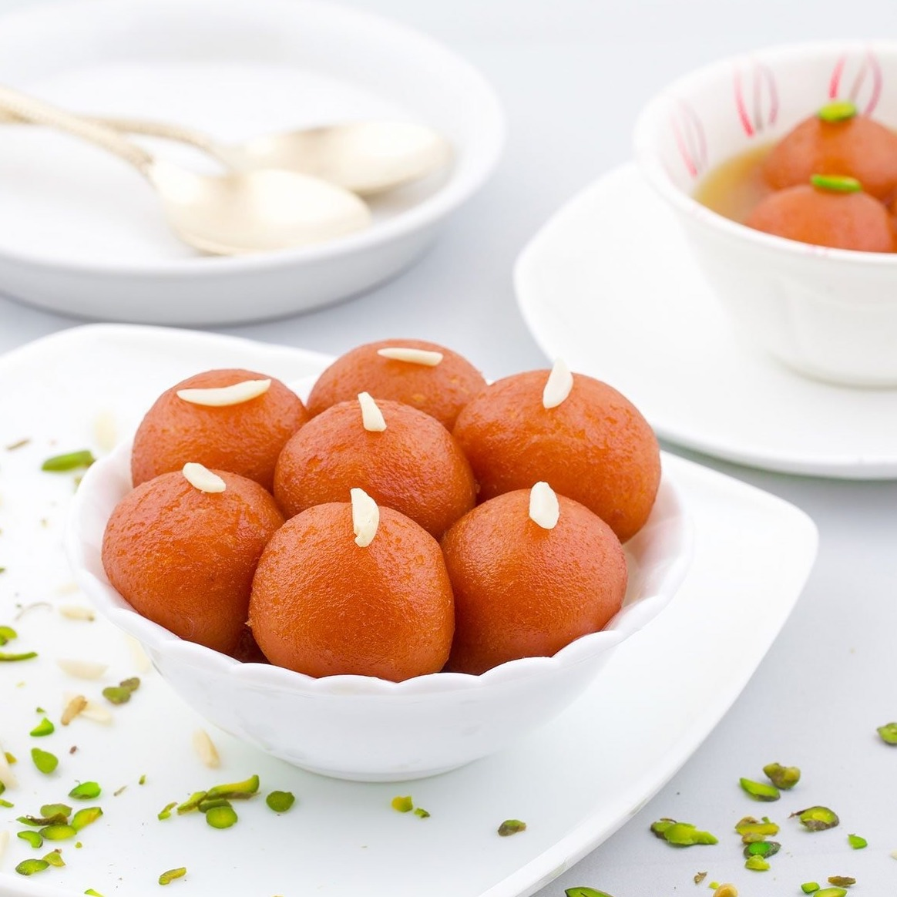
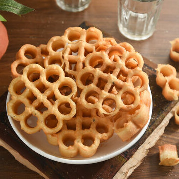

How does religion influence food in India?
India has a diverse mix of religions, with a Hindu majority (79.80%). Between 23-37% of Hindus are vegetarian. Most Hindus do not eat beef and most Muslims do not eat pork. These dietary restrictions influence the ingredients used within dishes.
Source: 2011 Indian Census Data

Gulab Jamun
Gulab Jamun is a sweet delicacy, especially prepared during Diwali, the Hindu festival of light. They are made with milk solids, sugar syrup and flavored with spices.

Sheer Khurma
Sheer Kurma is a speciality for Muslims on the festival of Eid. Dry fruits, vermicelli, thickened milk and sugar are the key ingredients.
